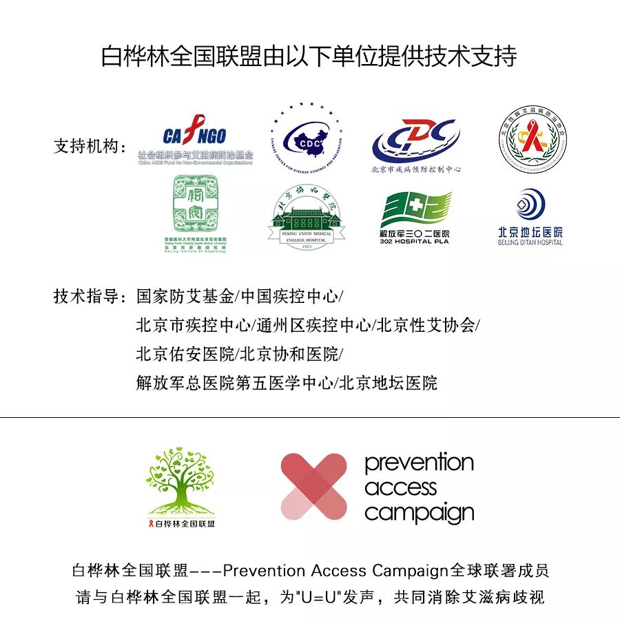

肺炎日记 | 1月27日：争夺抗疫窗口期，求解封堵战次生问题
原文链接 备份链接 【财新网】（记者 黄蕙昭 刘登辉）大年初三一早，迎接人们醒床的第一条消息，是国务院办公厅延长春节假期至2月2日的通知。疫情肆虐，延迟返工返校政策早有预兆。考虑到春节结束大规模人口迁移可能导致又一轮疫情集中爆发，适当延 …
不想错过白桦林的推送？
戳上方蓝字“白桦林健康资讯”关注我们
并点击右上角“···”菜单，
选择“设为星标”
南冥有鱼/作者
安东/编辑
白桦/审核

今晚在朋友圈看到《人物》公众号的一篇推文《断药危机：封城封村后的艾滋感染者》，短短几小时月阅读量已经10万+。作为一名艾滋病感染者，求生欲促使我想要写一点什么。我没有记者的吸睛视角，不过，我是中国一百多万艾滋病患者中的一员，我想这就够了。
武汉封城之后，我预感到形势严峻，担心储备的药物不够，就在大年初一晚上九点多苦苦哀求我爸开车把我送回了生活的城市。果不其然，很快，我们省也施行了交通管制。对于艾滋病患者来说，在抗病毒期治疗期间一旦出现漏服等情况就会面临极大风险的耐药，前期的所有努力也意味着前功尽弃。加上一旦耐药，后续的药物可能需要依赖于进口，费用开销会让很多患者望而却步。所以，一旦缺药对我们来说就是致命的打击。
我本人是经历了长达两年的抑郁之后才选择抗病毒治疗的，我也听过太多拿到阳性报告后因为想不开而自杀的。对于艾滋病患者来说，他们也许早已看淡生死，但始终跨不过去的坎是面对社会，因为歧视始终是一个最具危害性的隐形杀手。怎么面对父母？怎么面对妻儿？万一发病被亲戚、朋友、同事知道了怎么办？这些问题或许对别的病种来说不值得一提，甚至还会带来更多的同情与关爱，然而对于艾滋病患者来说无疑是被钉上了耻辱架，随时会接受来自社会歧视的凌厉审判，戴上道德的枷锁过一生。如果仅仅只是自己背负一切的痛苦也就罢了，但只要一想到就连死也可能累及家人，让他们也要被周围所误解、疏远，只怕死都变成了一件难事，剩下的就只有无休止的逃离与掩盖了。
但凡是已经接受了抗病毒治疗的艾滋病感染者其实都算经历了一次死亡。上药是一道很高很高的心坎，它意味着从此以后你要戴上面具更加强颜欢笑着面对着这个世界，你已经明白这药不仅保命，更重要的是保全你在意的人的脸面。我相信，即使是在被歧视的眼光看作荒淫无度，十恶不赦，不知廉耻的人，也都有“人之将死其言也善”的长夜忏悔，艰难的心理重建时光犹如那最黑暗的匣子，密不透风，孤独得只能听到心脏的跳动声，眼泪也因徒劳而干涸，这是怎样的绝望啊！凡是能够闯过这一关的人都经历了一次死亡，他们愿意相信史铁生所说的前面是一片空旷，除了希望什么也没有，但也没有选择地需要接受可能到来的第二次死亡、第三次死亡……耐药、拒诊、机会性感染等等，可是我们没有办法，只能淌过这样的时间之河，而后努力挣钱，为家人、为家人、为家人！我想虽然我们永远配不上在疾病抗争中“伟大”的字眼，但如果能够在无人知晓中死去也算是上天的怜悯与世间的疼惜了吧。
我在一篇自述感染经历的文章里谈到过，为了上药我历经千辛转户口；为了异地就诊，远隔千里换工作，其实都是为了逃离家乡，那个本该是最有人情味的地方。和大多数患者一样，我甚至不敢用单位的医保去艾滋病定点医院使用，因为怕会泄露我是个艾滋病人的信息。艾滋病污名化的现象仍然严重的今天，我们一旦暴露个人情况，不仅是歧视，随之而来对生活和工作的严重影响是非常可怕的。对于我们来说，最害怕的就是生病，需要做手术的那种病，需要体检的那种病。有一次我发烧，去亲戚的一个朋友家开的社区医院输液，当时想着小医院手续简单，吊几瓶水就好了，避免了大医院要各项检查的恐惧，没想到在那里还要血检，当时吓得我魂飞魄散，因为如果有免疫四项的检测，那我肯定暴露了，亲戚们也都会知道了。我一边害怕，一边旁敲恻隐地询问医生检查项目，得知只是血常规才松了一口气。想想看，连生病的权利都不敢有，那是一种怎样的悲哀？
武汉肺炎所引起的艾滋病患者断药恐慌，我想说最根本的原因还是现在的情况有可能会暴露抗病毒治疗者的个人隐私。我曾经在日记里写过这样一句话：我终于把自己的人生活成了一场声势浩大的计划。其实，每一个艾滋病患者从决心领药那一天开始，就已经开始计划自己的余生了，而如何最大程度地保密自己的身份是他们首要的考虑，因而取药、吃药对每个人来说都有一条私密的路径。目前的封路无疑是要打破了他们原本设定的求生路径，可想而知这绝不是索要一张通行证然后临时取药那么简单，特别是生活在农村地区的艾滋病患者，出村开证明如何陈述理由？一个村子谁不认识谁？或许这就是压死他们的最后一根稻草。看着药盒里的备用药越来越少的时候，焦虑、迷茫、恐惧涌上心头，锁住的不仅是脚步，耐药的可怕结局与面临身份暴露的恐惧激烈矛盾着，带来的是比肺炎更可怕的绝望。他们苦苦营造的保密人生，宁愿远走他乡也不愿世人歧视的眼光，此刻在生与死之间该如何抉择？对于非感人群来说可能难以理解这种情绪，甚至觉得小题大做，想得太多，但我想说事实就是如此，这是很多艾滋病患者的感受。
我们是易感人群，但比起经历过一次次艾滋病的死，我们不怕，只希望体面而有尊严地活着。来路不可回头，但我还得回去，因为责任与担当，我不是一个人在活。所以，请给我药。



原文链接 备份链接 【财新网】（记者 黄蕙昭 刘登辉）大年初三一早，迎接人们醒床的第一条消息，是国务院办公厅延长春节假期至2月2日的通知。疫情肆虐，延迟返工返校政策早有预兆。考虑到春节结束大规模人口迁移可能导致又一轮疫情集中爆发，适当延 …
原文链接 备份链接 ********** *****现在如果能多一点N95口罩、给我们医院捐赠一些无创呼吸机，就更加好了。***** 身穿防护服的蔡毅。受访者供图 文 | 新京报记者 周小琪 编辑｜陈晓舒 校对 | 杨许丽 ►本文 …
原文链接 备份链接 先点击上方蓝字关注我喔~ 从我1月22号第一次出现症状开始，到今天是第12天，在2天前，我开始自行退烧了，咳嗽频率也大幅下降，算上今天，我已经退烧3天了，体温一直都在36.5左右，没有反复，至此，我想我已经战胜病毒了。 …
原文链接 备份链接 - 疫 情 之 下 - 直到1月27日，我院发出接受社会捐赠的公告时，我才知晓，远在千里之外的我们，也没有防护物资了。年初一晚上去支援的我，在桌子边看见的防护用具，就是余下的所有物品。 ” 1 2020年1月25日， …
原文链接 备份链接 本报记者 张家振 武汉报道 “今天核酸检测结果阳性，尘埃落定，终于确诊了。”2月1日上午10时41分，疫情“吹哨人”李文亮对外界宣布了这一消息。李文亮是武汉市中心医院的一名眼科医生，因最早于2019年12月30日向外 …